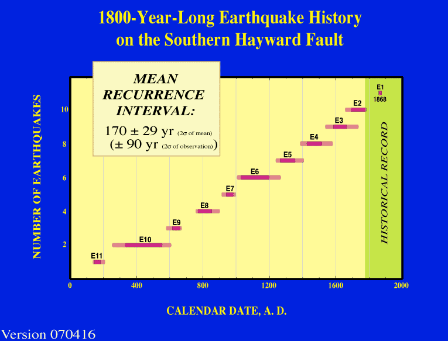

James J. Lienkaemper1 and Patrick L. Williams2
1U.S. Geological Survey, Menlo Park, CA 94025
2 Dept. Geological Sciences, San Diego State University, San Diego, CA 92182
To be published in Bulletin of the Seismological Society of America [December 2007]
Abstract This is the second paper presenting evidence of the occurrence and timing of paleoearthquakes on the southern Hayward fault as interpreted from trenches excavated within a sag pond at the Tyson’s Lagoon site in Fremont, California. We use the information to estimate the mean value and aperiodicity of the fault’s recurrence interval (RI), two fundamental parameters for estimation of regional seismic hazard. An earlier paper documented the four most recent earthquakes, including the historic 1868 earthquake. In this paper we present evidence for at least seven earlier paleoruptures since about AD 170. We document these events with evidence for ground rupture, such as the presence of blocky colluvium at the base of the main trace fault scarp and by corroborating evidence such as simultaneous liquefaction or increase in deformation immediately below event horizons. The mean RI is 170 ± 82 yr (1s, standard deviation of the sample), aperiodicity is 0.48, and individual intervals may be expected to range from 30 yr to 370 yr (95.4% confidence). The mean RI is consistent with the recurrence model of Working Group on California Earthquake Probabilities (2003) (mean, 161 years; range: 99 yr (2.5%); 283 yr (97.5%)). We note that the mean RI for the five most recent events may have been only 138 ± 58 yr (1 s). Hypothesis tests for the shorter RI do not demonstrate that any recent acceleration has occurred compared to the earlier period or the entire 1800-yr record, principally because of inherent uncertainties of the event ages.
